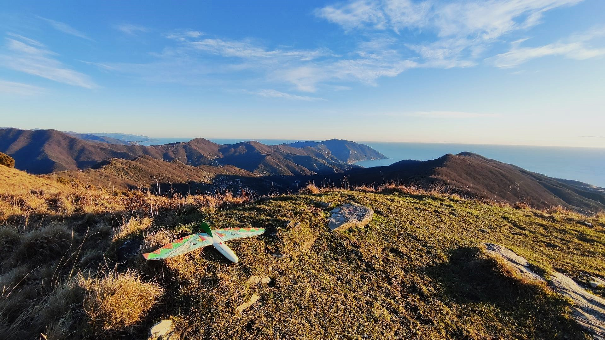
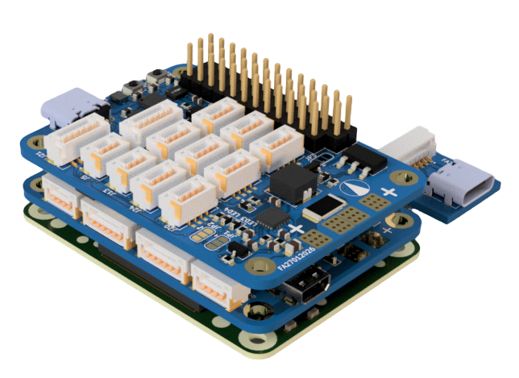
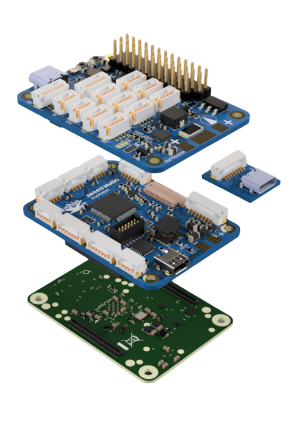
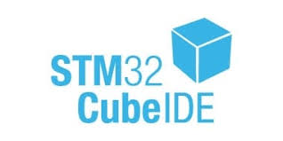
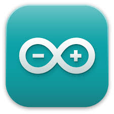
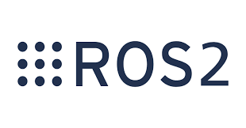

Minimal footprint. Maximum reliability.

This system is not just a single board. It is a complete embedded development stack designed to bridge low-level hardware control and high-level software intelligence in a compact, robust and production-ready form factor.
At its core, the platform is built around a Linux-based compute module carrier compatible with Raspberry Pi CM4/CM5. On top of this foundation, a dedicated microcontroller board based on STM32H743 handles all real-time and low-level tasks, including sensor fusion, servos control and deterministic control loops.
The microcontroller layer integrates a full suite of onboard sensors, including a double IMU (for redundancy), magnetometer, pressure sensor and additional interfaces for external expansion. It is designed as a high-reliability flight-controller-class system, suitable for aerial, underwater, mobile robotics applications, industrial automation and more.
The two layers are tightly integrated through a mezzanine architecture, forming a unified system where the microcontroller operates as a real-time node, while the Linux system provides high-level computation, connectivity and system orchestration.
Designed for real-world systems
The platform has been deployed and tested in demanding environments, including:
aerial robotics and UAV systems
underwater robotic platforms
experimental rocketry systems
autonomous and mobile robotic platforms. Its power architecture, mechanical stacking design and communication interfaces are engineered for reliability in high-vibration, high-noise and mission-critical applications.
Despite its capabilities, the system remains extremely compact, maintaining the footprint of a CM4-class module (40mmx55mm) while stacking three tightly integrated boards into a unified vertical architecture of less then two centimeters in height.




The platform is fully supported by a complete and open software stack:
This allows developers to operate across all abstraction levels, from bare-metal real-time control to high-level distributed robotics architectures.
The platform has been deployed and tested in demanding environments, including:
Its power architecture, mechanical stacking design and communication interfaces are engineered for reliability in high-vibration, high-noise and mission-critical applications.
Despite its capabilities, the system remains extremely compact, maintaining the footprint of a CM4-class module while stacking three tightly integrated boards into a unified vertical architecture of only a few centimeters in height.
Rather than a single product, this platform provides a full development environment that spans:
It enables engineers to move seamlessly from concept to deployment within a single, coherent hardware and software stack.